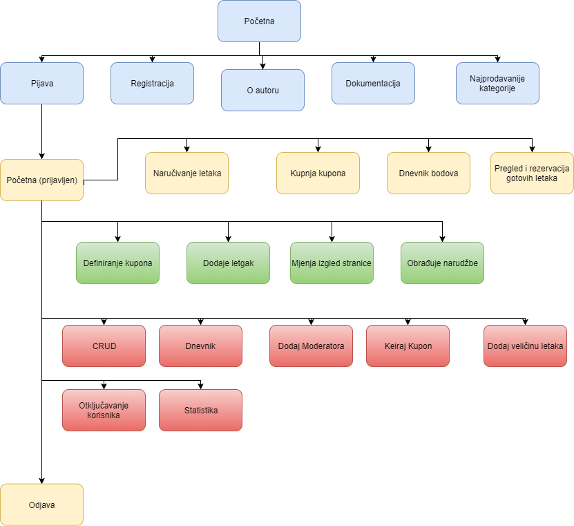

Dokumentacija
Projektni zadatak: Poslovni letci
Projekt omogućuje korisnicima da naručuju letke po svojim specifikacijama, te mogu s raznim pogodnostima skupljati bodove i ostvariti popust.
Uloge:
- Neregistrirani korisnik
- Registrirani korisnik
- Moderator/Autor
- Administrator
Detaljne upute:
-
Administrator
- Kreira kategorije veličina poslovnih letaka (A4, A5, A6, …) i dodjeljuje moderatore
- Kreira kupone popusta (min 3) na koje se mogu trošiti bodovi. Prilikom kreiranja kupona mora definirati naziv, pdf dokument sa opisom i slika, a opcionalno može dodati video.
- Administrator vidi statistike lojalnosti korisnika. Prva statistika prikazuje broj skupljenih ili potrošenih bodova po korisniku ili po vrsti akcije. .
-
Moderator
- Dodaje predloške poslovnih letaka u kategoriji u kojoj je moderator te definira potrebne podatke (npr. ime, prezime, opis, …).
- Vidi popis zahtjeva za izradu poslovnih letaka te označava istu kao obrađenu tako da postavi sliku izrađenog letka. Korisniku se automatski šalje mail da mu je letak izrađen.
- Vidi popis korisnika i njegovih izrađenih poslovnih letaka sa brojem dana potrebnim za izradu poslovnih letaka.
- Moderator bira kupon i definira koliko bodova je potrebno za pojedini kupon za njegovu kategoriju
- Može unijeti kod za kupon i dobiva potvrdu da li takav kod postoji ili je lažan.
- Moderator može promijeniti izgled stranice za kategorije kojima je moderator te se taj izgled primjenjuje na tom dijelu.
-
Registrirani korisnik
- Korisnik odabire predložak i popunjava podatke potrebne za naručivanjem novog poslovnog letka sa naručenom količinom.
- Korisnik vidi popis svojih izrađenih letaka sa slikom i količinom koju posjeduje. Može evidentirati podijeljene poslovne letke.
- Vidi stranicu sa informacijom o broju skupljenih bodova. Dobiva bodove za korištenje određenih dijelova web aplikacije.
- Vidi popis aktivnih kupona u obliku galerije slika za koje ima dovoljno bodova grupirano po kategorijama. Odabirom kupona može vidjeti dokument, sliku i video
- Može dodati kupon u košaricu. Kada je zadovoljan, može potrošiti bodove za kupnju kupona u košarici. Kupljeni kuponi dobivaju generiran kod koji se može ispisati (engl. printati)
- Korisnik može dijeliti (eng. share) neke sadržaje (minimalno jedan) na društvenu mrežu po želji uz pomoć API-a odabranog sustava
-
Neregistrirani korisnik (Gost)
- Vidi popis kategorija letaka i odabirom kategorije vidi tri najviše puta naručena predloška.
Navigacijski dijagram
Shema baze podataka

Popis i opis skripata
-
css
- akapitan.css - Glavni css u kojem se nalaze svi opisi pravila za prikaz stranice u svim medijskim veličinama
- css2.txt - Css skripta za pojedine stranice kojima se glavni css nije mogao postaviti.
- js
- akapitan.js - Javascrit skripte kojima se kod registracije vrše provjere na korisničkoj strani te pomoću ajax-a provjerava je li korisničko ime ili email zauzet.
- tablicaUpdate.js - Javascript skripte kojima se pomoću JQuery-a može kliknuti na pojedini element tablice i preko ajaxa postaviti upit da se tablica ažurira novom postavljeom vrijednošću.
- adminStatistikaGraf.js - Javascript funkcije za crtanje grafova klikom na gumb.
- .htaccess - skripta za autorizaciju pristupa mapi
- korisnici.php - skripta za ispis korisnika
- ServerCheck.php - Skripta koje se pozivaju ajaxom i vraćaju odgovor.
- adminCRUD.php - Skripta kojom pregledavamo sve tablice i omogućuje nam da dinamički mjenjamo sadržaj.
- adminDnevnik.php - Skripta za pregled svih podataka u tablici "dnevnik"
- adminDodajModeratora - Skripta za dodavanje moderatora k nekoj kategoriji
- adminKreirajKupon - Skripta za kreiranje kupona. Pristup ima samo admin.
- adminNovaVelicinaLetaka.php - Skripta za kreiranje nove veličine letka. Pristup ima samo admin.
- adminOtljučavanjeKorisnika.php - Skripta za pregled svih korisnika, mjenjanje njegovog statusa i uloge. Pristup ima samo admin.
- adminPDF.php - Skripta za pripremanje PDF datoteke i preuzimanje iste. Pristup ima samo admin.
- adminStatistika.php - Skripta za prikaz svih korisničkih bodova i prikaz bodova u različitim grafovima. Pristup ima samo admin.
- adminVirtualnoVrijeme.php - Skripta za korištenje virtualnog vremena. Pristup ima samo admin.
- ajax.php - Skripta kojom vraćamo podatke u JSON obliku ajax-ovoj funkciji.
- aktivacija.php - Skripta za aktiviranje korisničkog računa.
- baza.class.php - Klasa baza s kojom manipuliramo podatke u bazi podataka. Neke od funkcija su SelectDB, UpdateDB, SpojiDB... Uz to koriste se još i funkcije za upis bodova i za upis u dnevnik.
- index.php - Početna skripta u kojoj se prikazuju 3 naprodavanije kategorije u kojima neprijavljeni korisnik može pogledati 3 naprodavanija letka u nekoj od ponuđenih kategorija.
- index_signed.php - Skripta u kojoj korisnik pristupa prilikom uspješne prijave. Ako korisnik ima ulogu običnog korisnika, tada vidim samo letke koji su aktivni, no ako korisnik ima višu ulogu tada vidi i letke koji nisu aktivni. Klikom na jedan od letka dolazi do opcije da naruči letak.
- izmjena.php - Skripta koja dohvača xml objekt i sprema pomak sati u tablicu pomak.
- kategorijaIndex.php - Skripta kojom se klikom na kategoriju na index.php stranici prikazuju 3 najprodavaniji letci iz te kategorije.
- korisnikBodovi.php - Skripta kojom korisnik može vidjeti kojom akciom je dobio podova i vidi ukupni broj bodova.
- korisnikKuponi.php - Skripta u kojoj korisnik vidi aktivne kupone i stavlja ih u košaricu. Kada je zadovoljan može potrošiti bodove i kupiti kupone. Ispod vidi sve kupljene kupone s aktivnim kodom.
- letci.php - Skripta u kojoj korisnik može naručivati letke s unosom količine i opisa. Ispod vidi sve njegove naručene kupone koji su još u izradi.
- moderatorDefinirajKupon.php - Skripta u kojoj moderator uzima jedan od kupona i definira njegove podatke kao što su datum do kad će kupon biti aktivan, kolika mu je cijena, i ostalo.
- moderatorDodajLetak.php - Skripta u kojoj moderator dodaje letak u kategoriji nad kojom je moderator.
- moderatorProvjeriKupn.php - Skripta u kojoj moderator unosi kupon i vidi podatke kupona ako je pronađen.
- nova_lozinka.php -
- oAutoru.php - Podaci u autoru
- odjava.php - skripta za odjavu korisnika.
- prijava.php - skripta za prijavu korisnika
- registracija.php - skripta za registraciju korisnika
- rezervacija.php - skripta za rezervaciju letaka
- smarty.php - skripta kojom prosljeđujemo smarty varijable u html kod te postavljamo putanju do predloška, predloška kompresirano i ostale.
- tablicaUpdate.php - skripta kojom mjenjamo podatke u tablici.
- virtualnoVrijeme.php - skripta za promjenu virtualnog vremena.
- istekSesije.php - skripta za provjeru da li je korisniku isteklo vrijeme sesije i treba se ponovo prijaviti
Opis korištenih tehnologija
- HTML5, CSS3 - Tehnologija za prikaz web stranica
- PHP5
- jQuery - olakšano korištenje javascripta
- PHPMyAdmin - Baza podataka
- NetBeans IDE 8.2 - Uređivanje programskog koda
- XAMPP - za pokretanje lokalnog servera
- MySQL Workbench - Košišten za ERA model baze podataka
- Draw.io - Izrada diagrama
Popis i opis vanjskih biblioteka
Fpdf.php - Biblioteka za generiranje pdf dokumenta. Korišten za skidanje dokumenta s statiskikom korisnika. Smarty.php - Za olakšanu sintaksu pisanja PHP koda
Procjena završenosti projekta
Glavna funkcionalnost napravljena u kompletu s većinom funkcionalnostima opisanim u zadatku. Svaka uloga je definirana i izvršava svoju funkciju.
- Nije napravljeno sljedeče:- Većina upita se ne izvršava pomoću ajax-a
- Kod unosa novih elemenata nije vidljivo što smo unjeli
- Moderator nema funkciju da mjenja izgled kategorije nad kojom je moderator
- Pregled videa, pdf-a ili slike nije moguć kod kupona
- Graf statistike ne pokazuje graf optimalno
Popis bugova i grešaka
- s košarice se može naručiti kupon koji već imamo tako da oduzima bodove, a nije evidentiran kupon po drugi puta.
- sortiranje se ne izvršava kada je tablica sortirana ili pretraživana (ili oboje)
- sortiranje kod statistike može dovesti do neželjenih upita